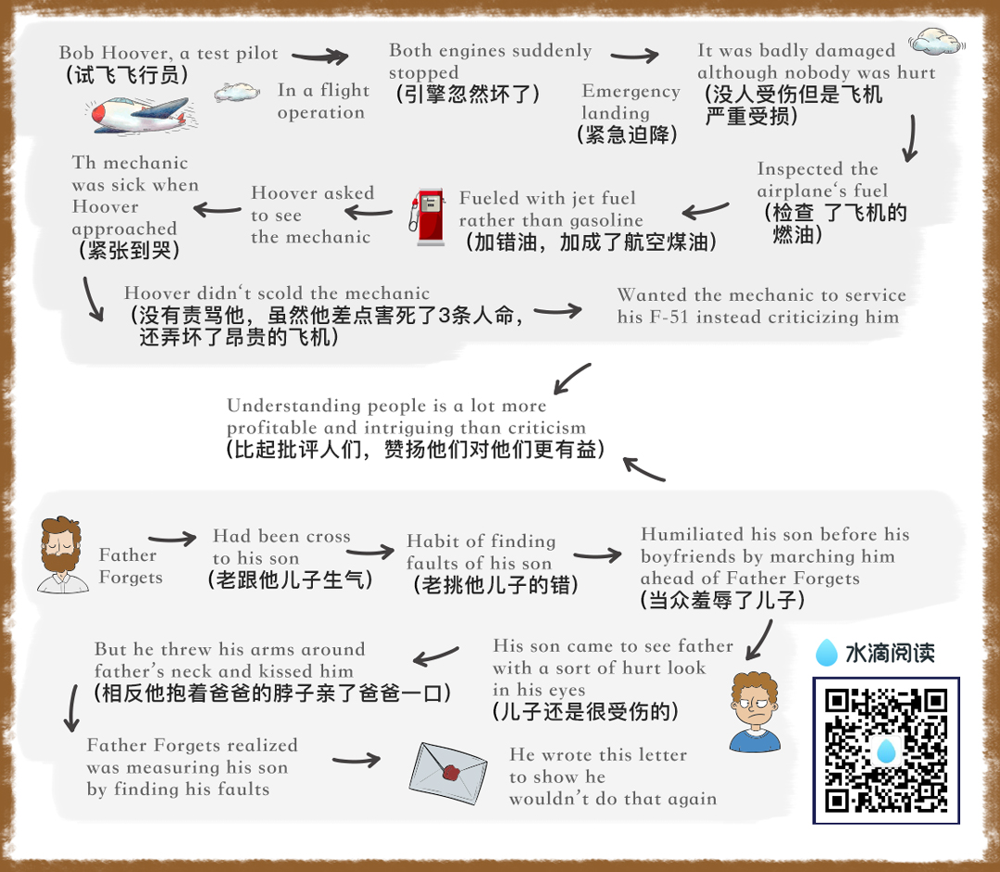

chapter1.4
Bitter criticism caused the sensitive Thomas Hardy, one of the finest novelists ever to enrich English literature, to give up forever the writing of fiction.

Criticism drove Thomas Chatterton, the English poet, to suicide.
Benjamin Franklin, tactless in his youth, became so diplomatic, so adroit at handling people, that he was made American Ambassador toFrance.
The secret of his success?
"I will speak ill of no man," he said, "and speak all the good I know of everybody.”
Any fool can criticize, condemn and complain—and most fools do.
But it takes character and self-control to be understanding and forgiving.
"A great man shows his greatness," said Carlyle, "by the way he treats little men."
Bob Hoover, a famous test pilot andfrequent performer at air shows, was returning to his home in Los Angeles from an air show in San Diego.
As described in the magazine Flight Operations, at three hundred feet in the air, both engines suddenly stopped.
By deft maneuvering he managed toland the plane, but it was badly damaged although nobody was hurt.
Hoover's first act after the emergency landing was to inspect the airplane's fuel.
Just as he suspected, the World War II propeller plane he had been flying had been fueled with jet fuel rather than gasoline.
Upon returning to the airport, he asked to see the mechanic who hadserviced his airplane.
This young man was sick with the agony of his mistake.
Tears streamed down his face as Hoover approached.
He had just caused the loss of a very expensive plane and could have caused the loss of three lives as well.
You can imagine Hoover's anger.
One could anticipate the tongue lashing that this proud and precise pilot would unleash for that carelessness.
But Hoover didn't scold the mechanic; he didn't even criticize him.
Instead, he put his big arm around the man's shoulder and said, "To show you I'm sure that you'll never do this again, I want you to service my F-51 tomorrow."
Often parents are tempted to criticize their children.
You would expect me to say "don't."
But I will not, I am merely going to say, "Before you criticize them, readone of the classics of American journalism, 'Father Forgets.' "
It originally appeared as an editorial in the People's Home Journal.
We are reprinting it here with the author's permission, as condensed in the Reader's Digest:
Father Forgets is one of those little pieces which dashed in a moment of sincere feeling—strikes an echoing chord in so many readers as to become a perennial reprint favorite.
Since its first appearance, "Father Forgets" has been reproduced, writes the author, W, Livingston Larned, "in hundreds of magazines and house organs, and in newspapers the country over.
It has been reprinted almost as extensively in many foreign languages.
I have given personal permission to thousands who wished to read it from school, church, and lecture platforms.
It has been 'on the air' on countless occasions and programs.
Oddly enough, college periodicals have used it, and high-school magazines.
Sometimes a little piece seems mysteriously to 'click.'
This one certainly did.
FATHER FORGETS
W.Livingston Larned
Listen, son: I am saying this as you lie asleep, one little paw crumpled under your cheek and the blond curls stickily wet on your damp forehead.
I have stolen into your room alone.
Just a few minutes ago, as I sat reading my paper in the library, a stifling wave of remorse swept over me.
Guiltily I came to your bedside.
There are the things I was thinking of, son: I had been cross to you.
I scolded you as you were dressing for school because you gave your face merely a dab with a towel.
I took you to task for not cleaning your shoes.
I called out angrily when you threw some of your things on the floor.
At breakfast I found fault, too.
You spilled things. You gulped downyour food. You put your elbows on the table. You spread butter too thick on your bread.
And as you started off to play and I made for my train, you turned and waved a hand and called, "Goodbye, Daddy!" and I frowned, and said in reply, "Hold your shoulders back!"
Then it began all over again in the late afternoon.
As I came up the road I spied you, down on your knees, playing marbles.
There were holes in your stockings.
I humiliated you before your boyfriends by marching you ahead of me to the house.
Stockings were expensive and if you had to buy them you would be more careful!
Imagine that, son, from a father!
Do you remember, later, when I was reading in the library, how you came in timidly, with a sort of hurt look in your eyes?
When I glanced up over my paper, impatient at the interruption, you hesitated at the door.
"What is it you want?" I snapped.
You said nothing, but ran across in one tempestuous plunge, and threw your arms around my neck and kissed me, and your small arms tightened with an affection that God had set blooming in your heart and which even neglect could not wither.
And then you were gone, pattering up the stairs.
Well, son, it was shortly afterwards that my paper slipped from my hands and a terrible sickening fear came over me.
What has habit been doing to me?
The habit of finding fault, of reprimanding—this was my reward to you for being a boy.
It was not that I did not love you; it was that I expected too much of youth.
I was measuring you by the yardstick of my own years.
And there was so much that was good and fine and true in your character.
The little heart of you was as big asthe dawn itself over the wide hills.
This was shown by your spontaneous impulse to rush in and kiss me good night.
Nothing else matters tonight, son.
I have come to your bed-side in the darkness, and I have knelt there, ashamed!
It is a feeble atonement; I know youwould not understand these things ifI told them to you during your waking hours.
But tomorrow I will be a real daddy! I will chum with you, and suffer when you suffer, and laugh when you laugh.
I will bite my tongue when impatientwords come.
I will keep saying as if it were a ritual: "He is nothing but a boy—a little boy!"
I am afraid I have visualized you as a man.
Yet as I see you now, son, crumpled and weary in your cot, I see that you are still a baby.
Yesterday you were in your mother's arms, your head on her shoulder.
I have asked too much, too much.
Instead of condemning people, let's try to understand them.
Let's try to figure out why they do what they do.
That's a lot more profitable and intriguing than criticism; and it breeds sympathy, tolerance and kindness.
"To know all is to forgive all."
As Dr. Johnson said: "God himself, sir, does not propose to judge man until the end of his days."
Why should you and I?
Principle 1—Don't criticize, condemnor complain.